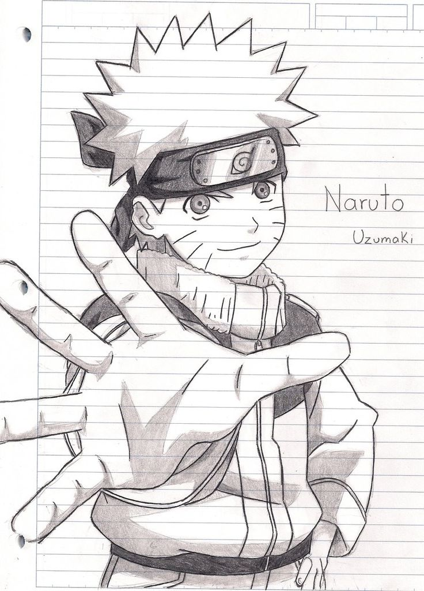
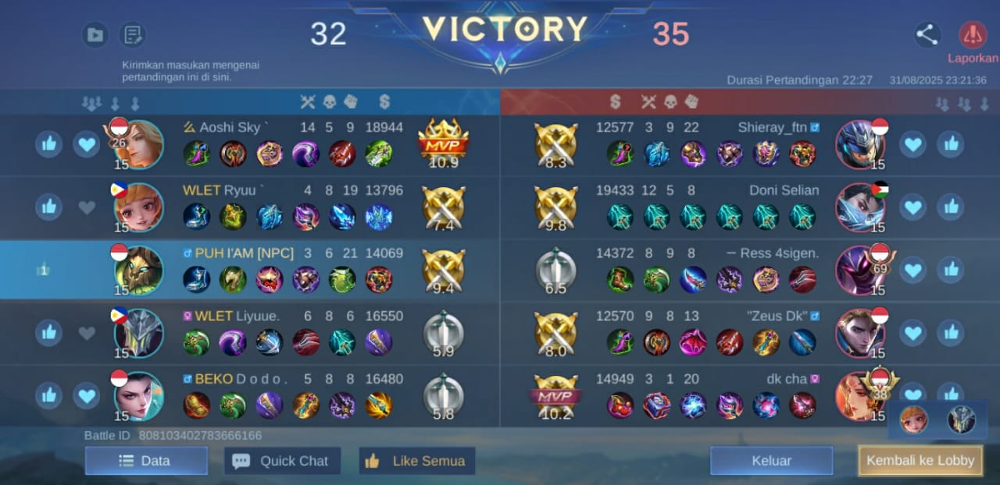

Profil Singkat
perkenalkan saya muhammad yogi,bisa dipanggil yogi.saya lahir di panyalaian 19 April 2005 dan tahun ini saya berusia 20 tahun.saya berasal dari Sumatera Barat,Kab.Tanah Datar,Kec. X Koto,Nagari Paninjauan. Saya adalah mahasiswa Universitas Negeri Padang,dan saya berada di program studi Pendidikan Teknik Informatika ,walaupun saya dituntut menjadi guru,saya memiliki minat di bidang teknologi yang dimana teknologi di zaman sekarang sudah masuk dalam berbagai bidang,termasuk pendidikan,jadi saya ingin meningkatkan skill saya.
Latar Belakang Pendidikan
- SD Negeri 21 Tabubaraie
- MTS Negeri 5 Tanah Datar
- SMA Negeri 1 X Koto
- Universitas Negeri Padang (S1 Pendidikan Teknik Informatika)
Keahlian
- HTML & CSS
- Desain Antarmuka (UI)
Hobi
|

Menggambar |
Mendengarkan Musik |

Main Game |